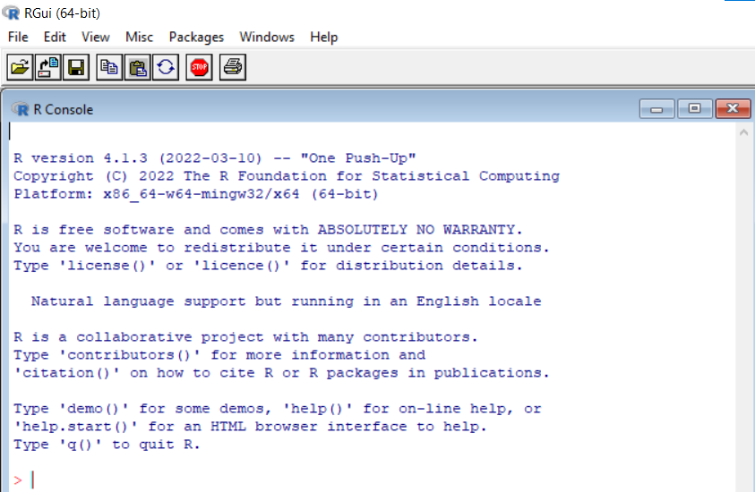
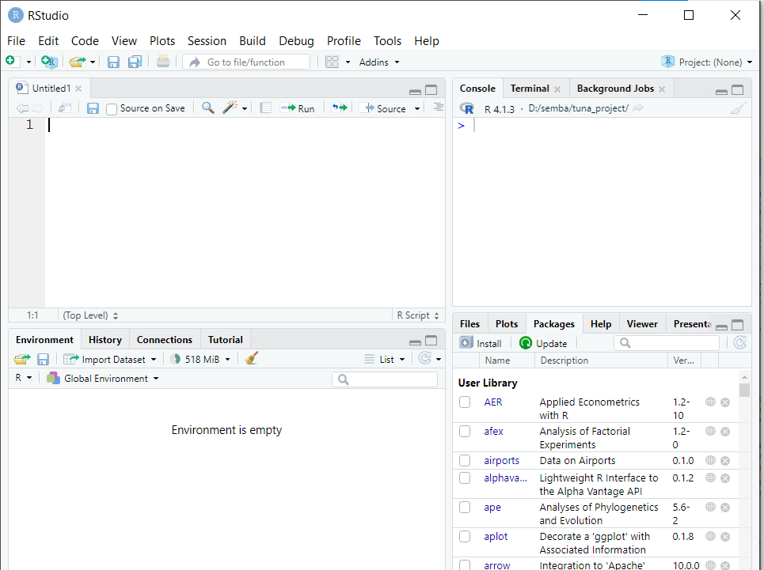

Introduction
For data to make sense, you will need to use some of the tools you have come across already, namely your spreadsheet and the R program. You will see the various specifics as you go along but before you go any further you need to become a bit more familiar with the R program and with some important tools in Excel. What you will learn in this chapter***
- The basics of using R;
- How to extend the capabilities of R;
- How to manage data using Excel (e.g. sorting, filtering);
- How to make pivot tables using Excel;
- How to save data in different file formats;
- How to get data from Excel into R
Beginning to use R
Once you have installed R, you can run it using the regular methods: you may have a shortcut on the desktop or use the Start button. Once you have run the program, you will see the main input window and a welcome text message. This will look something like Figure 1 if you are using Windows. There is a > and cursor | to show that you can type at that point. In the examples, you’ll see the > to indicate where you have typed a command, and lines beginning with anything else are the results of your typing.
The graphical user interface (GUI) of R program is somewhat sparse compared to most Windows programs. You are expected to type commands in the console. This sounds a bit daunting but is actually not that hard. Once you know a few basics, you can start to explore more and more powerful commands
R has an extensive help system [@rbase]. There are many resources available on the R website and it is worth looking at some of the recommended documents (most are PDF) and working through those. Of course this book itself will provide a good starting point!
After a while you can start to build up a library of commands in a basic text editor; it is easy to copy and paste commands into R. It is also easy to save a snapshot of the work you have been doing for someone else to look over.
Rstudio
Rstudio Figure 2 has made coding in R easier than ever before.

Getting help
R has extensive help. If you know the name of a command and want to find out more (there are often additional options), then type one of the following:
help(topic)
?topicYou replace the word topic with the name of the command you want to find out about. The help system that is opened depends on your operating system:
- Windows – opens your default web browser;
- Macintosh – opens a browser-like help window;
- Linux – displays text help in the R console.
Note
You can open the help system in your web browser in any operating system if you type help.start()
Online help
There are several people using R and many of them write about it on the Internet. The R website is a good start but just adding R to a web search may well get you what you need.
Starting with R in Rstudio
R can function like a regular calculator. Open Rstudio and start by typing some maths in a console:
14 +11 +(23 * 2)[1] 71sqrt(5)[1] 2.236068pi * 4[1] 12.56637The [1] indicates that the value displayed is the first in a series (and in this case the only value). If you have several lines of answers, then each line begins with an [n] label where n is a number relating to “how far along” the list the first in that line is. Instant display of the result is very useful but you really want to store some of the results so that you can use them later and use them in longer calculations. To do this you create variable names. For example, you simply assign the result of the computation with = operator and specify its name:
ans1 = 14 +11 +(23 * 2)This time you will notice that you do not see the result of your calculations. R does not assume that just because you created these objects you necessarily want to see them. It is easy enough to view the results; you need to type in the name of the variable you created and execute the command:
ans1[1] 71In most tutorials, you will notice that a <- is used instead of = operator. This is because in older versions of R, the = sign was not used:
ans2 <- 14 +11 +(23 * 2)
ans2[1] 71
Important
Although a <- is easy to read in code, but for most practical purposes = is quicker to type.
Naming variables
All objects created in R enviroment must be assigned as name. In a spreadsheet, each cell has a row and column reference, e.g. B12, which allows you to call up data by specifying the range of cells they occupy. R does not set out data like this so you must assign labels to everything so you can keep track of them. You need to give your data a name; R expects everything to have a name and this allows great flexibility. Think of these names as like the memory on a calculator; with R you can have loads of different things stored at the same time.
Names can be more or less any combination of letters and numbers. Any name you create must start with a letter; other than that, you can use numbers and letters freely. The only other characters allowed are the full stop and the underscore character. R is case sensitive so the following are all different:
Important
It is a good idea to make your names meaningful but short!
Create Data
Without data R has nothing to do and with must make some datasets. The simplest technique of making objects of elements in r is by concatenate using a c() command
weight = c(28.1, 25.4, 63.24, 45.8, 68.5, 42.6, 45.3, 74.5)
weight[1] 28.10 25.40 63.24 45.80 68.50 42.60 45.30 74.50Here you make an object called weight and combine the numbers in the brackets to make it. Each value has to be followed by a comma. The spaces are optional, R ignores them, but they can be useful to aid clarity and avoid mistakes when typing.
Additional analysis packages
The base distribution of R can do a lot but often you will find the need to perform some analysis that it cannot do. Because of the nature of R, several people are working to develop new packages that extend the capability of R. These packages are dedicated to specific routines from management, manipulation, analysis, model, and plotting data to reporting and sharing of information.
It is fairly simple to find and install these extra packages. One method is to search online but the R website has lists of available packages. You may be able to download a zip file. Then you can install the package from within R using one of the menu commands on the toolbar (under the Packages menu). Alternatively, if you are connected to the Internet you can use the menu to install packages directly.
The simplest approach to install packages in R is through a console by simply parse a command
install.packages("package.name")
Important
You replace package.name with the name of the package you want.
Loading extra analysis routines using the library() command
To load a library of routines into R you use the require() command, e.g.
require("package.name")